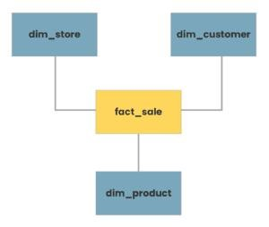
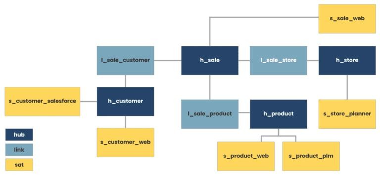

Data Vault 2.0 is a modeling methodology designed for scalable and agile enterprise data warehousing. It employs a hub-and-spoke architecture with hubs, satellites, and links to create a flexible and adaptable structure.
Key Principles of Data Vault 2.0 in Healthcare Insurance:
1. Business Vault Focus:
Capture all historical events like policy creations, claims submissions, payments, etc., as individual records. This enables historical analysis, fraud detection, and trend identification.
Build separate Business Vaults for different areas like Policy, Benefits, Claims, Providers, etc., ensuring modularity and flexibility.
2. Normalize By Subject:
Store core business entities (hubs) like Members, Providers, Policy Plans, etc., with unique identifying keys.
Utilize satellite tables to hold detailed attributes and relationships related to each hub. This avoids data redundancy and allows for easy extension.
3. Business Keys:
Use globally unique, non-PII keys, like hash keys, to identify business entities across the entire vault. This facilitates seamless integration and analysis of diverse healthcare data.
4. Granularity:
Capture every event at the most granular level (e.g., individual claim line items, procedure codes). This allows for rich analysis and future aggregations without data loss.
5. Business Logic in the ETL:
Implement business logic (e.g., benefit calculations, premium adjustments) in the ETL layer, not within the vault itself. This promotes flexibility and prevents schema changes.
6. Parallel Loading:
Load data into the vault independently by subject area (hubs and satellites). This improves scalability and allows for agile development and adjustments.
7. Agile Delivery:
Adapt Data Vault 2.0 to the iterative and incremental nature of healthcare data projects. Implement changes in small, manageable phases.
8. Automation:
Automate data integration, testing, and deployment processes for efficiency and quality control. Tools like Airflow and Glue can be integrated.
Benefits for Healthcare Insurance:
Improved Fraud Detection: Granular data and historical analysis facilitate identification of fraudulent claims and billing practices.
Enhanced Risk Management: Analyze claims data to understand risk factors and optimize pricing and underwriting strategies.
Personalized Member Experiences: Use granular data to tailor insurance plans and recommendations to individual members based on their needs and medical history.
Streamlined Regulatory Compliance: Easily track and audit all data changes to meet regulatory requirements and reporting obligations.
Reduced Data Silos: Break down data silos across different departments and systems, leading to better decision-making and collaboration.
Diving Deep into Data Vault 2.0: The Essential Technical TL;DR
Data Vault on Azure. © Microsoft Corporation1. High-Level Architecture:
This diagram showcases the main components of a Data Vault 2.0 implementation on Azure. It typically includes:
Source systems: Different data sources feeding into the system, like billing systems, CRM, medical records, etc.
Landing Zone: Azure Data Lake Storage for staging raw data before processing.
Raw Data Vault: Storage for detailed, un-transformed data in relational tables (Hubs, Links, Satellites). Azure SQL Database or managed Azure Synapse Analytics are common choices.
Business Vault: Transformed data in subject-oriented tables for analysis and reporting. Again, Azure SQL Database or Synapse Analytics can be used.
Data Lake Analytics: For processing and transforming data using tools like Apache Spark or Azure Databricks.
Power BI or other BI tools: For visualization and reporting based on the Data Vault.
2. ETL/ELT Pipeline Diagram:
This diagram focuses on the data flow from source systems to the Data Vault. It may depict:
Extract processes: Pulling data from various sources using Azure Data Factory pipelines or Azure Databricks.
Transformations: Cleaning, validating, and structuring data with tools like Data Factory, Databricks, or Azure Functions.
Load processes: Inserting data into the Raw and Business Vault tables using Bulk Insert commands or other loading patterns.
3. Data Vault Table Structure Diagram:
This diagram presents the specific schema of the Data Vault tables, highlighting how Hubs, Links, and Satellites are connected. It shows primary and foreign keys, grainularity of data, and table relationships.
4. Real-Time Processing Diagram:
This diagram demonstrates how real-time data from streaming sources like IoT devices or sensors can be integrated into the Data Vault. It may include elements like:
Event Hub: For ingesting real-time data streams.
Azure Stream Analytics: For real-time processing and filtering of data streams.
Update processes: Mechanisms for updating the Data Vault with real-time insights.
A Primer on Data Vault 2.0: Understanding the Vocabulary
Here is an example from phdata.io
Typical star schema model ©phdata.ioEquivalent Data Vault representation ©phdata.ioHere are more details on Data Modeling (Data Vault 2.0) with specific healthcare industry examples:
Hubs, Satellites, and Links in Data Vault 2.0:
1. Hub:
Definition: Hubs represent core business concepts or entities.
Example (Healthcare): Patient Hub, Provider Hub, Procedure Hub.
Explanation: Each hub captures a unique set of business keys related to a specific entity. For instance, the Patient Hub could store patient identifiers.
2. Satellite:
Definition: Satellites store descriptive or contextual attributes related to hubs.
Example (Healthcare): Patient Satellite, Provider Satellite.
Explanation: The Patient Satellite could contain information like patient demographics, historical addresses, or insurance details, providing a historical view of the patient entity over time.
3. Link:
Definition: Links connect hubs to represent relationships between entities.
Example (Healthcare): Patient-Provider Link, Patient-Procedure Link.
Explanation: The Patient-Provider Link captures the association between patients and their healthcare providers, allowing for a dynamic and adaptable relationship model.
Loading Patterns in Data Vault 2.0:
1. Full Load:
Scenario (Healthcare): Loading patient demographic data from an external source into the Patient Hub.
Explanation: In a full load scenario, all relevant data for a hub or satellite is loaded into the data warehouse, establishing a complete snapshot of the entity.
2. Delta Load (Incremental Load):
Scenario (Healthcare): Updating the Patient Satellite with the latest changes in patient demographics.
Explanation: Delta loads involve updating only the changed or new records since the last load, minimizing the data transferred and ensuring efficient updates.
3. Initial Load:
Scenario (Healthcare): Loading historical patient-encounter data into a new Procedure Hub.
Explanation: The initial load populates a hub or link with historical data to establish a baseline for ongoing data capture.
Time Variance and Temporal Aspects:
1. Handling Historical Changes:
Scenario (Healthcare): Tracking changes in a patient's primary care provider over time.
Explanation: The Patient-Provider Link, along with the Provider Hub and Patient Hub satellites, allows for the capture of historical relationships, supporting time-travel queries.
2. Capturing Historical Attributes:
Scenario (Healthcare): Storing historical patient addresses in the Patient Satellite.
Explanation: Satellites are designed to capture changes in descriptive attributes over time, providing a historical perspective on entity attributes.
Business Vault and Raw Data Vault:
1. Business Vault:
Scenario (Healthcare): Creating a Business Vault to store integrated patient, provider, and procedure data.
Explanation: The Business Vault consolidates hubs, satellites, and links to create a business-oriented view, facilitating analytical queries and reporting.
2. Raw Data Vault:
Scenario (Healthcare): Storing raw patient encounter data directly from source systems.
Explanation: The Raw Data Vault holds the source system data in its native form, providing a traceable and auditable record of the source data before transformations.
Data Vault 2.0 in Healthcare Analytics:
1. Patient Journey Analysis:
Scenario: Analyzing the complete patient journey by traversing the Patient-Procedure and Patient-Provider links.
Benefits: Data Vault 2.0 supports comprehensive patient analytics by maintaining historical relationships and associations.
2. Provider Performance Metrics:
Scenario: Calculating metrics on provider performance using data from the Patient-Provider Link.
Benefits: The link structure allows for agile adjustments in relationships, facilitating dynamic changes in provider assignments.
3. Clinical Trial Participation Tracking:
Scenario: Tracking patient participation in clinical trials through link structures.
Benefits: The adaptability of links supports the dynamic assignment of patients to trials, capturing changes over time.
Tech TLDR: Implementing Data Vault 2.0 for Healthcare Insurance Success
Azure Implementation:
1. Hubs, Satellites, and Links:
Hubs: Azure SQL Data Warehouse tables or Azure Synapse Analytics dedicated SQL pool tables representing core business entities (e.g., Patient, Provider, Procedure).
Satellites: Additional tables storing descriptive attributes related to hubs, capturing historical changes.
Links: Tables representing relationships between hubs, facilitated by foreign key relationships.
2. Loading Patterns (Azure):
Full Load: Utilize Azure Data Factory to perform full loads into dedicated SQL pool tables.
Delta Load: Implement incremental loading using Data Factory to update the changed or new records.
Initial Load: Populate tables with historical data using Data Factory or Azure Databricks.
3. Time Variance and Temporal Aspects:
Leverage temporal tables in Azure SQL Data Warehouse to handle historical changes in hubs and satellites.Implement time-travel queries using T-SQL to analyze data at different points in time.
4. Business Vault and Raw Data Vault:
Business Vault: Create views or materialized views in Azure Synapse Analytics to represent integrated business-oriented data.
Raw Data Vault: Store raw source system data in Azure Data Lake Storage or Azure Blob Storage before transformations.
5. Data Vault 2.0 in Healthcare Analytics:
Utilize Azure Synapse Analytics for comprehensive analytics, leveraging SQL on-demand and Apache Spark capabilities.
Leverage Power BI or Azure Analysis Services for building healthcare analytics dashboards.
Sample Airflow workflow in Apache Airflow (Azure):
Snowflake Implementation:
1. Hubs, Satellites, and Links:
Hubs: Snowflake tables representing core business entities.
Satellites: Additional tables capturing historical attributes related to hubs.
Links: Tables representing relationships between hubs, maintained using foreign key relationships.
2. Loading Patterns:
Snowflake Implementation:
Full Load: Use Snowflake's COPY INTO or INSERT INTO statements for full load.
Delta Load: Implement incremental loading using Snowflake's MERGE statement or upsert capabilities.
Initial Load: Load historical data using Snowflake's COPY INTO or INSERT INTO statements.
3. Time Variance and Temporal Aspects:
Leverage Snowflake's TIMESTAMP data type and temporal table features to handle historical changes.Use Snowflake's time-travel and versioning features to query historical data.
4. Business Vault and Raw Data Vault:
Business Vault: Create views or materialized views in Snowflake to represent integrated business-oriented data.
Raw Data Vault: Store raw source system data in Snowflake's staging area or external cloud storage before transformations.
5. Data Vault 2.0 in Healthcare Analytics:
Utilize Snowflake's cloud data warehouse capabilities for healthcare analytics.Leverage Snowflake's data sharing features for collaborative analytics across organizations.
Sample Airflow workflow in Apache Airflow (Snowflake):
AWS Implementation:
1. Hubs, Satellites, and Links:
Hubs: AWS Redshift tables or Amazon RDS tables representing core business entities (e.g., Patient, Provider, Procedure).
Satellites: Additional tables storing descriptive attributes related to hubs, capturing historical changes.
Links: Tables representing relationships between hubs, facilitated by foreign key relationships.
2. Loading Patterns:
Full Load: Use AWS Glue to perform full loads into Redshift tables or Amazon RDS.
Delta Load: Implement incremental loading using AWS Glue or custom ETL scripts to update changed or new records.
Initial Load: Populate tables with historical data using AWS Glue or other ETL tools.
3. Time Variance and Temporal Aspects:
Leverage temporal tables in AWS Redshift to handle historical changes in hubs and satellites.Implement time-travel queries using SQL queries against historical data.
4. Business Vault and Raw Data Vault:
Business Vault: Create views or materialized views in Redshift to represent integrated business-oriented data.
Raw Data Vault: Store raw source system data in Amazon S3 or Amazon Redshift Spectrum before transformations.
5. Data Vault 2.0 in Healthcare Analytics:
Utilize AWS services like Redshift, Glue, and S3 for comprehensive healthcare analytics.
Leverage Amazon QuickSight or other BI tools for building healthcare analytics dashboards.
Sample Airflow workflow in Apache Airflow (AWS Glue and Redshift):
Google Cloud Implementation:
1. Hubs, Satellites, and Links:
Hubs: BigQuery tables representing core business entities.
Satellites: Additional tables capturing historical attributes related to hubs.
Links: Tables representing relationships between hubs, maintained using foreign key relationships.
2. Loading Patterns:
Full Load: Load data into BigQuery tables using Google Cloud Dataflow or other ETL tools.
Delta Load: Implement incremental loading using Dataflow or custom ETL scripts to update changed or new records.
Initial Load: Load historical data using Dataflow or other ETL tools.
3. Time Variance and Temporal Aspects:
Leverage TIMESTAMP columns in BigQuery to handle historical changes in hubs and satellites.
Implement time-travel queries using SQL queries against historical data.
4. Business Vault and Raw Data Vault:
Business Vault: Create views or materialized views in BigQuery to represent integrated business-oriented data.
Raw Data Vault: Store raw source system data in Google Cloud Storage or BigQuery before transformations.
5. Data Vault 2.0 in Healthcare Analytics:
Utilize Google BigQuery, Dataflow, and other GCP services for comprehensive healthcare analytics.Leverage Data Studio or other BI tools for building healthcare analytics dashboards.
Sample Airflow workflow in Apache Airflow(GCP)
Decoding Data Modeling: Data Vault 2.0 vs Kimball and Inmon
Hub-and-Spoke Architecture:
Data Vault 2.0: Utilizes a hub-and-spoke architecture. The hub represents the core business concept, and spokes (satellites) contain historical data attributes. Links connect hubs, creating a flexible and scalable structure.
Kimball and Inmon: Typically employ a star or snowflake schema. Kimball focuses on star schemas for dimensional modeling, while Inmon often uses a normalized snowflake schema.
Focus on Business Keys:
Data Vault 2.0: Emphasizes the use of business keys (natural keys) in hubs to create a common business vocabulary, promoting agility and adaptability to changes.
Kimball and Inmon: Often use surrogate keys for dimension tables, which are system-generated and may not directly reflect business semantics.
Scalability and Flexibility:
Data Vault 2.0: Designed for scalability and adaptability to changing business requirements. New sources and business concepts can be easily added without extensive redesign.
Kimball and Inmon: May require more effort for modifications or additions due to the tightly integrated nature of dimensional models.
Handling of Historical Data:
Data Vault 2.0: Systematically manages historical changes through satellite tables, preserving a complete historical record of data changes.
Kimball and Inmon: Historical tracking is often handled through slowly changing dimensions (SCDs) in dimensional models.
Agility and Iterative Development:
Data Vault 2.0: Promotes an agile and iterative development approach, allowing for faster delivery of business value and adaptation to evolving requirements.
Kimball and Inmon: Typically involve a more structured and upfront design process, which may take longer to deliver results.
Integration with Big Data and Unstructured Data:
Data Vault 2.0: Designed to integrate seamlessly with big data and unstructured data sources, supporting a broader range of data types and sources.
Kimball and Inmon: Originally designed for traditional relational databases, and may require adaptations for integration with newer data sources.
Parallel Development:
Data Vault 2.0: Supports parallel development by allowing multiple teams to work on different areas concurrently, reducing development cycle times.
Kimball and Inmon: May face challenges with parallel development due to interdependencies in the dimensional model.
Collaboration Between Data Warehousing and Business Intelligence:
Data Vault 2.0: Aims for collaboration and alignment between data warehousing and business intelligence teams, fostering better communication and understanding of business needs.
Kimball and Inmon: May sometimes lead to a disconnect between the two teams, potentially resulting in misalignment between the data warehouse and the reporting layer.
Additional Reading on Data Vault 2.0:
Data Vault 2.0 References:
Data Vault 2.0 Official Website: - Dive deep into the official source for information on Data Vault 2.0 concepts, best practices, and community resources.
Dan Linstedt's Blog: - Follow the insights and expertise of Data Vault 2.0 pioneer Dan Linstedt through his blog posts, presentations, and online webinars.
The Data Vault Guru: A Pragmatic Guide on Building a Data Vault
Cloud Implementations:
Azure:
Microsoft Data Vault 2.0 Reference Architecture: - Explore a pre-built solution for implementing Data Vault 2.0 on Azure Synapse Analytics, including code examples and deployment guidance.
Azure Synapse Analytics Documentation: - Learn about the functionalities and capabilities of Azure Synapse Analytics, a powerful platform for building large-scale data warehouses.
Azure Data Factory Documentation: - Discover how to orchestrate and automate data pipelines for loading and transforming data into your Data Vault 2.0 on Azure.
AWS:
AWS Redshift Documentation: - Understand the features and benefits of AWS Redshift, a cloud-based data warehouse solution suitable for Data Vault 2.0 implementations.
AWS Glue Documentation: - Explore AWS Glue, a fully managed service for data extraction, transformation, and loading (ETL), offering integration with Data Vault 2.0 workflows.
Amazon S3 Documentation: - Learn about Amazon S3, a scalable and cost-effective object storage service for storing raw and processed data within your Data Vault 2.0 architecture.
GCP:
Google BigQuery Documentation: - Get familiar with Google BigQuery, a serverless data warehouse that seamlessly integrates with Data Vault 2.0 principles for scalable data analysis.
Google Cloud Dataflow Documentation: - Utilize the power of Google Cloud Dataflow for building and managing streaming data pipelines that feed into your Data Vault 2.0 environment.
Google Cloud Storage Documentation: - Explore Google Cloud Storage, a highly reliable and scalable object storage solution for storing raw and processed data within your Data Vault 2.0 on GCP.
Airflow Workflow in Apache Airflow:
Apache Airflow Documentation: - Master the intricacies of Apache Airflow, a popular open-source workflow management platform often used to orchestrate Data Vault 2.0 workloads.
Airflow GitHub Repository: - Access the latest codebase and development discussions for Apache Airflow, contributing to your understanding of its integration with Data Vault 2.0.
Snowflake Implementation:
Snowflake Documentation: - Delve into the comprehensive documentation for Snowflake, a cloud-based data warehouse known for its performance and elastic scalability, making it a viable choice for Data Vault 2.0 implementations.
Snowflake GitHub Repository: - Explore the official GitHub repository for the Snowflake Python connector, facilitating integration with various tools and frameworks you might use with Data Vault 2.0.
Additional Reading:
Data Modeling Basics: - Gain a foundational understanding of data modeling principles and techniques, enhancing your comprehension of Data Vault 2.0 concepts.
Kimball vs. Inmon Data Warehouse Architectures: - Compare and contrast the two prominent data warehouse design methodologies, providing context for Data Vault 2.0's positioning within the data warehousing landscape.
Collaborative Analytics and BI Tools:
Microsoft Power BI Documentation: - Empower yourself with the capabilities of Microsoft Power BI, a versatile business intelligence platform for visualizing and analyzing data stored in your Data Vault 2.0 environment.
AWS QuickSight Documentation: - Discover the features and functionalities of AWS QuickSight, a cloud-based business intelligence service that seamlessly integrates with various data sources, including Data Vault 2.0.
Google Data Studio Documentation: - Explore Google Data Studio, a free data visualization tool that can connect to Data Vault 2.0 sources for creating informative dashboards and reports.
Books on Data Vault 2.0:
"Building a Scalable Data Warehouse with Data Vault 2.0" by Dan Linstedt: The foundational book by the creator of Data Vault 2.0, providing in-depth explanations of the methodology, design patterns, and best practices.